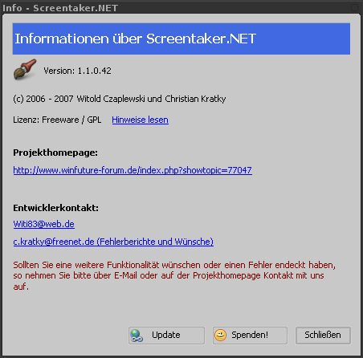

Nachdem Sie ein Screenshot mit einer Methode Ihrer Wahl erstellt haben, taucht folgendes Bearbeitungsfenster auf.
 Abbildung 5: Bearbeitungsfenster
Abbildung 5: Bearbeitungsfenster
Sämtliche Operationen befinden sich in der Toolbar. Hier ihre Funktionen in der entsprechenden Reihenfolge.
- Screenshot drucken
- Öffnet das Druckvorschaufenster, wo Sie anschließend das Bild ausdrucken können. Sollten Sie mehr als einen Drucker besitzen, wird Ihnen erst eine Liste Ihrer Drucker angezeigt, in der Sie sich für einen entscheiden müssen.
- In Zwischenablage kopieren
- Kopiert das zu sehende Bild in die Zwischenablage und schließt anschließend das Bearbeitungsfenster.
- Speichern als ...
- Öffnet den Speichern unter Dialog, in dem Sie sich für einen Speicherort und Dateiformat entscheiden können.
- Verlauf
- Öffnet das Verlaufsfenster
- Upload
- Hierbei wird die Datei mit dem eingetragenen Namen an den Hostingdienst Ihrer Wahl hochgeladen. Darauf hin erscheint das Uploadfenster.
- Direktes Speichern
- Bei PNG, JPG, BMP wird die Datei im jeweiligen Format im Screenshotverzeichnis gespeichert.
- Ausgangsbild wiederherstellen
- Stellt den ursprunglichen Screenshot wieder her. Dabei gehen sämtliche Veränderungen verloren.
- Screenshot vergrößern
- Hierbei wird das zusehende Bild vergrößert.
- Zurücksetzen auf Ausgangsgröße
- Hierbei wird das Bild auf seine Ausgangsgröße zurückgesetzt.
- Screenshot verkleinern
- Hierbei wird das zusehende Bild verkleinert.
- Re-Capture
- Es öffnet sich das trübe Auswahlfenster mit dem Sie das aktuelle Bild weiter beschneiden können.
- Qualitätseinstellungen
- Es öffnet sich das Qualitätseinstellungsfenster.
- Mit externem Programm bearbeiten
- Das aktuelle Bild wird mit dem unter Einstellungen eingetragene Bildbearbeitungsprogramm geöffnet. Nachdem Sie das Bildbearbeitungsprogramm geschlossen haben, wird anschließend das aktualisierte Bild angezeigt.
- Color Picker
- Der Color Picker ermöglicht Ihnen Farbwerte eines bestimmten Bildpunktes anzeigen zu lassen. Die gewonnen Farbinformationen können Sie in anderen Programmen wiederverwenden. Bspw. sehr praktisch beim Webdesign und einer entsprechenden CSS-Datei.
- Linie
- Diese Funktionalität ermöglicht es Ihnen Linien in das Bild einzufügen. Dadurch können Sie bestimmte Bereiche unterstreichen und hervorzuheben.
- Rechteck
- Ähnlich wie die Linie können Sie hier Rechtecke einfügen um bestimmte Bereiche hervorzuheben.
- Einstellungen
- Öffnet das Einstellungsfenster. Siehe Einstellungsfenster.
- Hilfe
- Hier gelangen Sie zu der Online-Dokumention.
- Info
-
Öffnet das Informationsfenster, welches unter anderem die Updatefunktion beeinhaltet, mit der Sie nach einer neuen Version von Screentaker.NET suchen können.
Abbildung 3: "Info über"
- Statusleiste
- In der Statusleiste sehen Sie einige Informationen, wie die Höhe, Breite oder die aktuellen Mauskoordinaten des aktuellen Bildes.